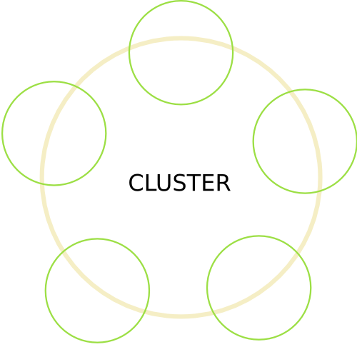
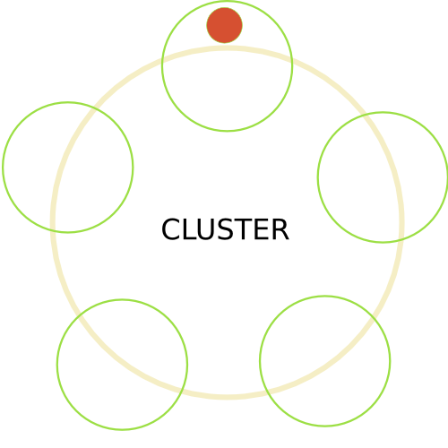
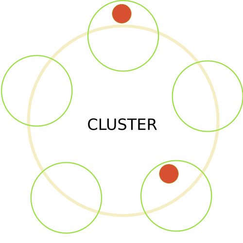
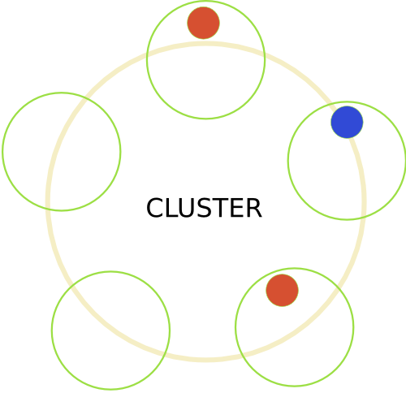
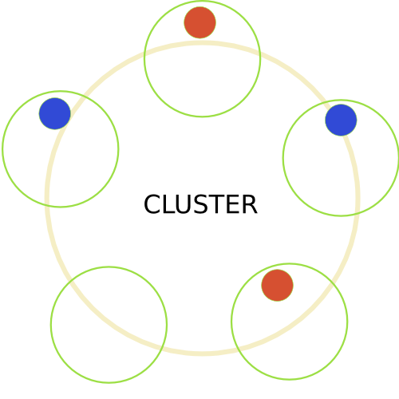
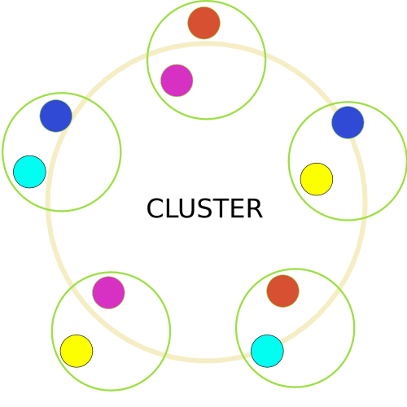
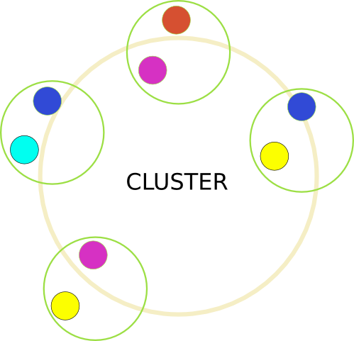
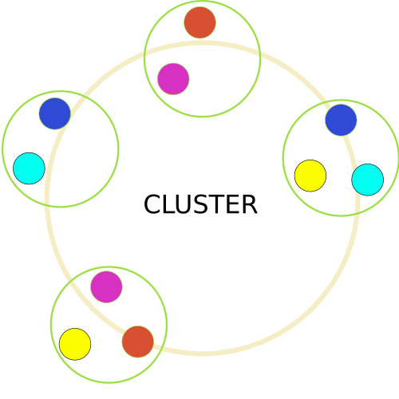
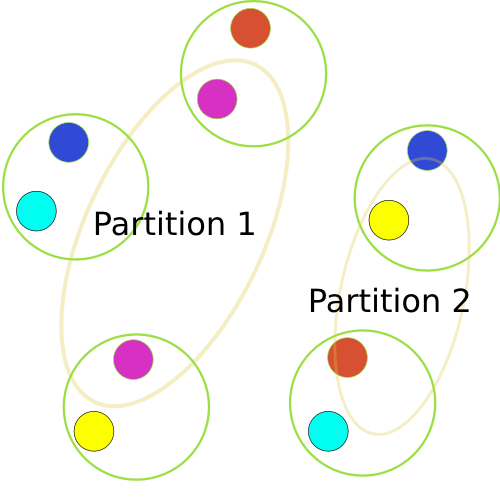
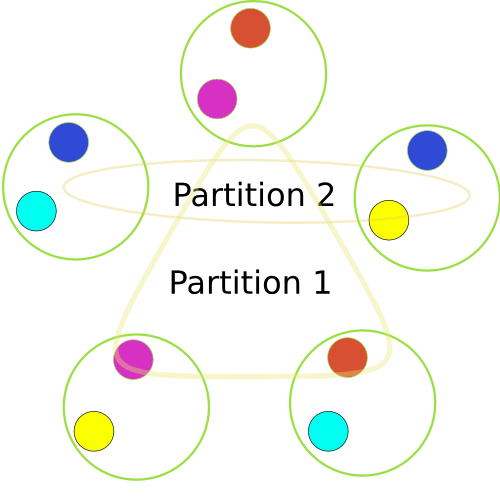

An Infinispan Tale
How split clusters can get back together happily
Tristan Tarrant / @tristantarrant
About me
- Infinispan Project Lead
- Open Source hacker since 1993
- @ Red Hat since 2011
Agenda
- What is Infinispan ?
- How Infinispan handles cluster partitions
What is Infinispan ?
- In-Memory Java Key/Value store
- Local + Clustered
- Elastic
- Transactional
- Strongly consistent
- Embedded + Client/Server
- Distributed execution framework
- Distributed under the ASL 2.0
Infinispan clustering
Transport
- Based on JGroups
- Multiprotocol: UDP + TCP
- Discovery: Multicast + Unicast + S3 + Google + etc
- Security
- Geographical replication
Infinispan clustering
Cluster Topology
- JGroup views
- Represents group membership
- Each node has a unique address
- Ordered, first is coordinator
- View changes when nodes join + leave
- View Id
Infinispan clustering
Consistent Hashing
- Key hashed using MurmurHash3 algorithm
- Hash space divided into segments
- Segments assigned to nodes
- Key > Segment > Owners
Consistent Hashing Visualization
Step 1: Empty cluster

Consistent Hashing Visualization
Step 2: Adding one entry

Consistent Hashing Visualization
Step 3: Primary and Backup

Consistent Hashing Visualization
Step 4: Another one

Consistent Hashing Visualization
Step 5: You get the idea

Consistent Hashing Visualization
Step 6: Here's one I made earlier

Infinispan clustering
Controlling Consistent Hashing
- Physical topology aware (site/rack/machine)
- Grouping
- Key Affinity service
- Capacity Factor
Infinispan clustering
State Transfer
- Elasticity
- Nodes added / removed
- We still have at least one owner
- Rebalancing: moving segments to satisfy distribution
Rebalancing Visualization
Step 1: My cluster full of data
Rebalancing Visualization
Step 2: He's dead, Jim

Rebalancing Visualization
Step 3: A healed cluster

Disaster:
What if multiple nodes fail at once ?
CAP: The Theorem
- Formulated by Eric Brewer in 1998
- Consistency
- Availability
- Partitioning
- Can only satisfy two properties at once
CAP: The Combinations
- Consistency + Availability: The "Ideal World"
- Partitioning + Availability: "I bend so I don't break"
- Partitioning + Consistency: "Don't corrupt my data"
Partition handling strategies
- Prefer availability
- Prefer consistency
Split detection
- Lost >= number of owners
- Ensure a stable topology
- Check segment ownership
- Mark partition as available / degraded / unavailable
- Send PartitionStatusChangedEvent to listeners
Cluster partitioning
Case 1: No data loss

Cluster partitioning
Case 2: Lost data

Merging split clusters
- Split clusters see each other again
- Ensure a stable topology
- Decide new state based on partition state
- One unavailable partition > UNAVAILABLE
- One available partition > attempt merge
- All partitions are degraded > attempt merge
Future work
- Reconcile state
- Eventual consistency !!!